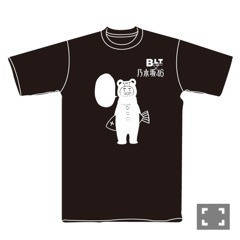

| 2013/06 26 Wed | 448回目*marika |
コンビニ寄ったら
乃木坂46が表紙の週プレさんが
いらっしゃったぞ！
しかも、内容が盛りだくさんだぞ。
立ち読みせずに家に帰って
じっくり読むべきだな。これは

二期生さんの写真を見て思い出した。
週プレさんは
結成当時にもメンバー名鑑を
載せてくださったのです。
それを久しぶりに見たのよ。
みんな雰囲気とか変わったな。
私なんかまだ前髪無くて
誰かわからん状態おうお

前髪無いだけでクールに見えました。
人って変わるなと思いました。

6thシングルカップリング曲
「他の星から」MVが
YouTubeで公開されました

初のユニット曲だったので
嬉しかったあです。
ゆったんれいかなぁちゃん
若月さゆかなりんとメンツがすごくて
撮影のときは不安でいっぱいでした。
アニメの曲でありそうな
歌詞が不思議な曲になってます。
衣装がかわいい！
あんみつ食べたくなる曲！
MVぜひ見てください。飛んでます
......
BLTコラボTシャツ第二弾！

鮭持ったしろくまりっくま先輩
そう！先輩の隣のふきだしが
今回のデザインのポイント

自分だけのオリジナルTシャツに
してほしい願いです。
いや、うん。例えば
握手会で着てきて、
私を笑わせる一言でもいいし、
何かしてほしいみたいな
お願い書いてもいいし、
絵を描いてもいいし、
自分の名前書いてもいいし、
自由です
ネガティブなことかかないで
できれば楽しいことかいてね！
テーマが幸運だから。
自分でかいて世界に一つのTシャツ
着てみませんか。
着たら願いが叶うかも
ふふふ
でもね、これ...
一回かいたらもう消えないからね、
その辺、考えてね。

......
6thシングル「ガールズルール」
フルがレコチョクにて
明日先行配信します！
32名様だけにメンバーの
メッセージ入りポスターを
プレゼントだって
 ！
！
！
うわうわうわーいいなー
ポスターいいなー
まりっかの欲しい人ー？
では明日も頑張ろう。
おやすみなさい！
まりか
コメント(264)
2013/06/26 00:00